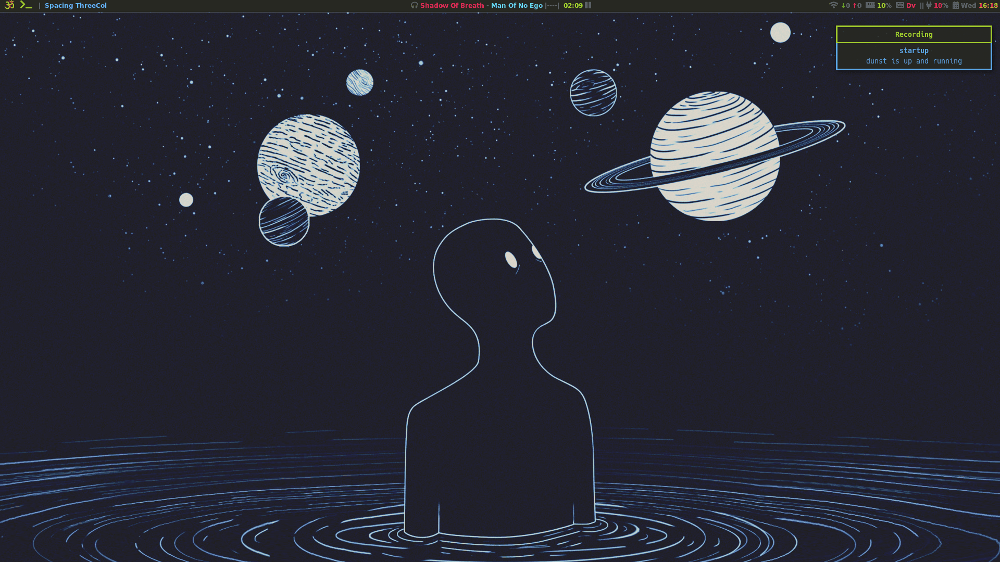
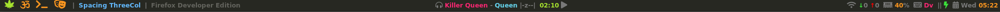
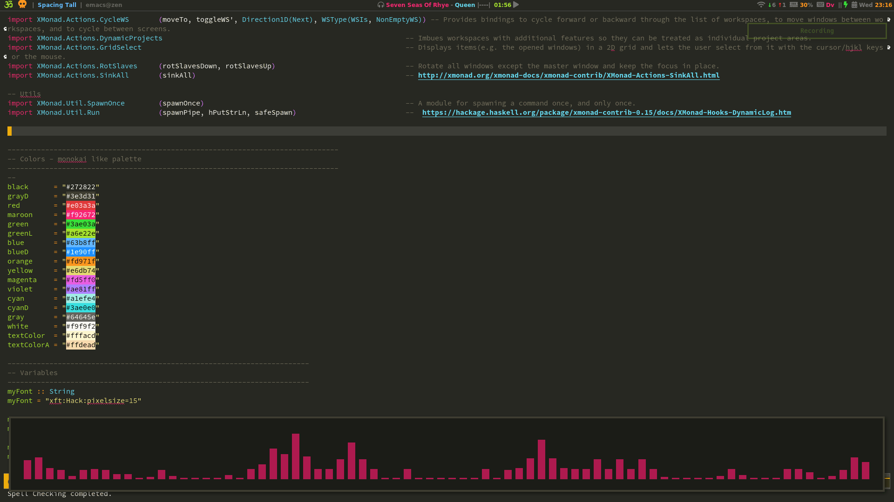

Arch Linux no DE(Xmonad) install guide
Table of Contents
- 1. Preparations
- 2. Install and configure the system
- 3. Environment

1 Preparations
It is always good idea to take a look at the arch wiki installation guide.
1.1 Live USB
Assuming that you already have a bootable flash drive.
If not, check dd and the official website for the arch downloading.
For the dualboot system with windows the easiest way to do it is to install Windows first. It will create EFI partition with bootmgr.efi for you.
So if you desire to have a dualboot you should install Windows and then continue with arch installation.
If you want solo archlinux skip this. You can use wine to open .exe files from linux.
1.1.1 BIOS config
Once it's done, load the flash drive.
Press F2 or del to open BIOS menu.
You need to change the boot priority in BIOS.
F10 and reboot.
1.1.2 Kernel boot options
If you have issues with the tiny fonts or fan speed, you should run the installation with the kernel option which disables console frame buffer.
To make this, when the selection menu appears, press E and type nomodeset at the beginning of the line then press Enter.
You can pass your default kernel options with #rEFInd kerenel options later.
1.2 Changing layout
If you're e.g. a dvorak user, your first step could be changing the keyboard layout:
loadkeys dvorak # =qwerty= users should skip this step.
1.3 Network connection
After archiso has been booted you may want to make wireless internet connection, wired connection should be done automatically:
wifi-menu
To check connection:
ping -c 3 archlinux.org
1.4 Update the system clock
To ensure that system clock is accurate.
timedatectrl set-ntp true
Check the status:
timedatectrl status
1.5 UEFI
Lets make sure we're using UEFI mode:
ls /sys/firmware/efi/efivars/ or efivar -l
If output has some variables, everything is fine. If not, the system may be booted in BIOS or CSM mode.
1.6 Partitioning
This part could be confusing, so I'll cover some basics here.
To check your partition scheme type:
lsblk
You should see at least 1 drive, I have 3 including temporary flash drive:
NAME MAJ:MIN RM SIZE RO TYPE MOUNTPOINT sda 8:0 0 465G 0 disk *SSD* ├─sda1 8:1 0 499M 0 part ├─sda2 8:2 0 100M 0 part /boot ├─sda3 8:3 0 16M 0 part ├─sda4 8:4 0 185G 0 part └─sda5 8:5 0 200G 0 part / sdb 8:16 0 931.5G 0 disk *HDD* ├─sdb1 8:17 0 400G 0 part /home ├─sdb2 8:18 0 24G 0 part [SWAP] └─sdb3 8:19 0 508G 0 part sdc 8:32 1 7.5G 0 disk *Flash Drive* └─sdc1 8:33 1 7.5G 0 part
You should not see any mount points unless you mount partitions to them, we will do it later.
1.6.1 Disks partitioning
If you are doing dual boot system with Windows, then EFI System Partition is created. You must mount it as a /boot for Linux bootloader.
If you want to make clean solo arch installation you can wipe your drive:
This will destroy all the data on chosen drive.
Don't wipe sda if you're making dual boot and have Windows installed.
gdisk /dev/sdX # where X is your drive name
Press RET first, then x for advanced config and z for zap.
And now create a new one:
cgdisk /dev/sdX # where X is your drive name
gdisk is for GPT only, if you need MBR(which is atavism), rather use fdisk or parted because they could cover both GPT and MBR.
It is also possible to convert between MBR and GPT with gdisk.
1.6.1.1 SSD
It's better to use SSD (sda in this case) for the system files where speed is important e.g.: bootloader, programs, et.c.
| # | size | FS type | mountpoint |
|---|---|---|---|
| sda1 | 499M | 0c01 | - |
| sda2 | 100M | EF00 | boot |
| sda3 | 16M | 0c01 | - |
| sda4 | 185G | 0700 | - |
| sda5 | 200G | 8300 | root |
- sda1,3 Microsoft reserved space.
- sda2 To boot the system it must be exactly
EF00. In case of dual boot, Windows will create this partition automatically. - sda4 Windows partition.
- sda5 I set 200G for the
root, but it could be less: ~60-100G should be fine, depends on your needs.
1.6.1.2 HDD
On the other hand HDD (sdb in this case) could be used as a place for user files e.g.: music, projects, configurations, et.c..
| # | size | FS type | mountpoint | description |
|---|---|---|---|---|
| sdb1 | 400G | 8300 | home | linux file system |
| sdb2 | 24G | 8200 | swap | 1.5 of my RAM memory (16G) |
| sdb3 | 508G | 0700 | winhome | microsoft basic data |
- sdb1
/homeplace for your user files. - sdb2
SWAPdepends on your RAM quantity. Usually you should take x1 or x1.5 of your RAM. If you will take less, there is a still a chance of #hibernating successfully. - sdb3 will contain Windows files.
You also have choice to use space to e.g. mount /usr or /var.
1.6.2 Mounting the file systems
We want to assign /mnt to the root partition:
mount /dev/sda5 /mnt
Next we need to create some new folders in our /mnt:
mkdir /mnt/boot mkdir /mnt/home
Mount them accordingly:
mount /dev/sda2 /mnt/boot mount /dev/sdb1 /mnt/home
1.6.3 Format the partitions
Partitions must be formatted with an appropriate file system:
- SWAP
mkswap /dev/sdb2 swapon /dev/sdb2
- Linux
mkfs.ext4 /dev/sda5 mkfs.ext4 /dev/sdb1
Press
yif you have this warning:/dev/sdxY contains a ext4 file system- /boot
You already have EFI partition if you have Windows installed
Boot must be Fat32 as UEFI requirement.
mkfs.fat -F32 /dev/sda1
2 Install and configure the system
2.1 Mirrorlist
On the live system all mirrors are enabled, and sorted by their synchronization status and speed at the time the installation was created.
Still sometimes you may want to sort mirrors.
The higher a mirror is placed in the list, the more priority it is given when downloading a package. So it's better to check this file and edit it with geographically closest mirrors on the top.
vim /etc/pacman.d/mirrorlist
The file you edited will be copied with pacstrap later.
#Vim should already be installed. It could be your first time you editing with vim, so navigation helpers below:
- press
escto make sure you are in command mode hjklfor navigating- by pressing
vyou will enter visual mode or visual line mode by pressingshift + v - then you can paste it with
p - select what you need to cut and type
dd - to save and exit press
escand type:wq(you will see this letters on the very bottom)
If you don't want to spent time learning this powerfull tool (which I highly recommend), you have several other options including nano.
To use nano you should at least know how to save and exit:
- ctrl+o (save)
- ctrl+x (exit)
2.2 Arch base files
Now install base packages to our assigned root.
pacstrap /mnt base base-devel git wpa_supplicant
In this step you also may want to install additional packages like git or wget. I also recommend to install wpasupplicant in case you will use wireless connection. You can pick preferred network manager later.
2.3 Generate and edit fstab file
Generate the new fstab:
genfstab -U /mnt >> /mnt/etc/fstab
And check if everything is correct:
vim /mnt/etc/fstab
This is very important to check your /mnt/etc/fstab file, because you will not be able to run system properly.
You should see something like this:
# <file system by UUID> <dir> <type> <options> <dump> <fsck> UUID=XXXX-XXXX /boot vfat defaults 0 2 UUID=XXXXXXXX-XXXX-XXXX-XXXX-XXXXXXXXXXXX / ext4 defaults 0 1 UUID=XXXXXXXX-XXXX-XXXX-XXXX-XXXXXXXXXXXX /home ext4 defaults 0 2 UUID=XXXXXXXX-XXXX-XXXX-XXXX-XXXXXXXXXXXX none swap defaults 0 0
2.4 Chroot into the system
Switch into root with the new system:
arch-chroot /mnt
2.5 Locale
Uncomment needed locales e.g. en_US.UTF-8 UTF-8:
vim /etc/locale.gen
And generate them:
locale-gen
Also add LANG variable:
cat > /etc/locale.conf echo "LANG=en_US.UTF-8" > /etc/locale.conf
For e.g. dvorak users to make layout persistent:
cat > /etc/vconsole.conf echo "KEYMAP=dvorak" > /etc/vconsole.conf
2.6 Network configuration
Hostname is a unique name created to identify a machine on a network.
- Basic method that working in arch-chroot.
Replace
uniquenamewith anything you want:echo uniquename > /etc/hostname
Later you will see something like user@uniquename
You will be able to generate hostname with hostnamectl later. This method is not working in arch-chroot.
hostnamectl set-hostname myhostname
Add matching entries to the hosts:
vim /etc/hosts
127.0.0.1 localhost ::1 localhost 127.0.1.1 uniquename.localdomain uniquename
If the system has a permanent IP address, it should be used instead of 127.0.1.1
See more in network configuration.
2.7 Add community repositories
Enabling multilib for the arch community repositories.
multilib is for 64bit system.
To do this open the pacman.conf file:
vim /etc/pacman.conf
Uncomment this:
#[multilib] #Include = /etc/pacman.d/mirrorlist
You also may add unofficial repositories with caution.
- To have pacman animation add this under the 'Misc options':
ILoveCandy
- You will need 'Color' option for #yay later.
And update the system. We should let system know about the changes.
pacman -Syyu
2.8 Password and User
- Root password
passwd
- User password
You should add at least one user.
Replaceusernamewith preferred one:useradd -m -g users -G wheel,storage,power -s /bin/bash username
And set password for a new user:
passwd username
2.9 Sudoers
Read about visudo before editing!
Any errors makes sudo unusable. Always edit /etc/sudoers file with visudo to prevent errors.
EDITOR=vim visudo
Since you added user to the wheel group, user will gain full root privileges, you need to uncomment this line:
%wheel ALL=(ALL) ALL
If you are using a server or someone else has access to the wheel group.
You may want to require sudoers to type root password.
In this case add this line:
Defaults rootpw
Read more about root password.
2.10 Microcode
You should enable microcode updates, my laptop has intel CPU:
pacman -S intel-ucode
Install amd-ucode if you have AMD CPU.
2.11 Bootloader
You have different choices like systemd-boot or grub.
For the dual boot I'm using rEFInd:
pacman -S refind-efi
Figure 2: After customization should look like this.
2.11.1 Install refind:
REFInd will automatically find your EFI System Partition (ESP) with installation script.
You can use refind-install script with --root flag to help install it from a "live CD" or other emergency system,
notice that your /boot partition should be mounted.
It's a common practice to use man utility to learn more about the particular program.
So if you need more options like --alldrivers, feel free to check it with man.
man refind-install
Run the script:
refind-install
2.11.2 Kernel options
You should place your refind_linux.conf file in the same directory as your kernel.
And the basic config to run the system could look like this:
## This file should be present in the same directory as the EFISTUB kernel and initramfs files ## More info at http://www.rodsbooks.com/refind/linux.html , http://www.rodsbooks.com/efi-bootloaders/efistub.html "Boot with defaults" "root=PARTUUID=XXXXXXXX-XXXX-XXXX-XXXX-XXXXXXXXXXXX rootfstype=ext4 rw add_efi_memmap initrd=/intel-ucode.img initrd=/initramfs-linux.img"
There are several ways to findout your PARTUUID, one of them is:
blkid -s PARTUUID -o value /dev/sdxY #Where 'x' is the disk letter and 'Y' is the partition number.
In this guide root assigned to sda5.
Also, to set the default boot OS based on the loader's title, which appears in the main menu beneath the icons when you select the loader by uncommenting or adding:
default_selection "+,vmlinuz"
Notice that you can put custom kernel options here, e.g.: I'm using acpi_osi=! acpi_osi="Windows 2009" acpi_backlight=native for my Zenbook Pro UX501VM because of known Nvidia issue.
And nmi_watchdog=0 to disable watchdog for the energy savings.
Make space for #hibernation.
2.11.3 rEFInd customization
You have ability to use themes in rEFInd. I'm using refind-minimal theme. You will need to setup #git first.
- Create a folder called
themesin the same directory withrefind.conf mkdir themes cd themes- (no term)
Clone theme repository::
git clone https://github.com/EVanPurkhiser/rEFInd-minimal.git
- (no term)
- To enable the theme add
include themes/rEFInd-minimal/theme.confin the end ofrefind.conf::
2.12 Reboot
Exit the chroot environment and reboot the system:
exit
umount -R /mnt
reboot
3 Environment
3.1 Preliminaries (important)
This part depends on your personal choices, which means you have very different options to create the system of your dream.
It could be very useful to collect your configs in one place, usually people call them dotfiles.
It allows you to share your configs across other machines, distros or community :).
Here you can find different dotfiles for all tastes. You also can check my dotfiles.
Wise idea will be to take a look at Arch general recommendations.
3.1.1 Establish internet connection
Since you installed #wpasupplicant you have ability to establish wireless connection.
This commands will allow you to establish temporary connection untill reboot.
Because of the process substitution, you cannot run this command with sudo and must use a root shell:
wpa_supplicant -B -i /interface/ -c <(wpa_passphrase /SSID/ /passpharase/) dhcpcd /interface/
Don't forget to change user:
su username
To discover your interface type this:
lspci -k ip link
It usually starts with w.
Check wireless configuration if you have any problems.
3.1.2 Git
In order to use git, you need to set at least name and email:
git config --global user.name "John Doe" git config --global user.email "johndoe@example.com" git config --global core.editor emacs
For user-specific configuration I'm using ~/.config/git/config.
Emacs and vim are popular text editors used by developers. And highly recommended by author of this guide.
If you not familiar with emacs, you may need to search for specific instructions for how to set up your favorite editor with Git.
You can read official First-Time Git Setup guide.
3.1.3 AUR
You can read more about Arch User Repository.
Suggest to install yay .
With AUR helpers comparison table you can choose AUR wrapper by your taste.
Clone with git and install with makepkg:
git clone https://aur.archlinux.org/yay.git cd yay makepkg -si cd .. && rm -rf yay yay -Ps #print system stats
Yay depends on go. If you have no plans to use it, feel free to clean it with yay:
yay -Yc #this command will clean unneeded dependencies
3.1.4 Dependencies
Unsorted dependencies to install:
yay -S openssh htop dex screenfetch
If you're installing packages form AUR and you trust them, you can use --noconfirm flag to auto-install packages.
But you still may want to check build scripts sometimes ;).
3.2 GUI
3.2.1 Xorg and friends
Xorg is the most popular display server among Linux users. You can find my X config in .dotfiles/X11.
yay -Ss xorg xorg-xinit xorg-xmodmap xterm
3.2.1.1 Xinitrc
When/if you enable #display manager it will run your WM/DE as a session and most of them are using #Xprofile.
You can also run xinit as a session, or even a standalone browser.
You can copy the default xinitrc file from /etc/X11/xinit/xinitrc,
you should edit it before execution, since we didn't install twm and xorg-xclock:
cp /etc/X11/xinit/xinitrc ~/.xinitrc
You can execute xmonad or any other WM/DE with .xinitrc as simple as:
#!/bin/sh exec xmonad
To execute .xinitrc run startx or xinit. //
3.2.1.2 Xresources
~/.Xresources file is useful if you want to add a color theme for some X applications, or configure X fonts appearance, or e.g. change the Xcursor theme.
Check wiki examples. You also can check my config.
Most Display managers load the ~/.Xresources file on login.
3.2.1.3 Touchpad
Laptop specific configuration.
For touchpad tap-to-click edit /X11/xorg.conf.d/30-touchpad.conf you can also find it in my dotfiles.
yay -S xf86-input-libinput
3.2.1.4 Keboard
If you want to indicate that the current keymap table should be printed on the standard output in the form of expressions that can be fed back to xmodmap.
xmodmap -pke > ~/.Xmodmap
To temporary change your keyboard layout:
setxkbmap dvorak
3.2.2 Video drivers
Check your video card first:
lspci | grep -e VGA -e 3D
3.2.2.1 Nvidia
If you have NVIDIA card, follow this archor - #Nvidia hybrid graphics.
3.2.2.2 AMD
If you have ATI(AMD) card, your installation could be pretty easy, just follow the wiki.
3.2.3 Window Manager/Desktop Environment
For Linux newcomers better decision could be to try desktop environment like KDE or GNOME first.
However you could install multiple Window Managers or DE and change them with this script or with display manager.
It is also possible to replace default DE's window manager with desired one, e.g.: xmonad in KDE.
3.2.3.1 Xmonad
My favorite tiling window manager, spending most of my time with it.
See #Xmonad configuration.
- Xmonad with KDE
Install #KDE first. Create a directory ~/.config/plasma-workspace/env if it does not already exist. Create a file there called
set_window_manager.shand add this:export KDEWM=/usr/bin/xmonad
Restart your session and enjoy xmonad with KDE.
You should have #xmonad config in
~/.xmonad/xmonad.hs.
3.2.3.2 KDE
Read more about KDE5.
yay -S plasma kde-applications kdeconnect powerdevil sudo systemctl enable sddm.service # enable KDE login manager reboot
3.2.3.3 GNOME
Read more about GNOME.
yay -S gnome gnome-extra sudo systemctl enable gdm.service # enable GNOME login manager reboot
3.2.4 Display Manager
3.2.4.1 Xprofile
Xprofile allows you to execute commands at the beginning of the X user session. It is similar to #xinitrc.
If you want to add/modify this file, means that you decided to use xmonad or any other WM.
Run programs you wish before the window manager is started:
# Start WM exec xmonad
I'm launching only xmonad because I launched commands like background or composite manager in my xmonad.hs startup hook.
Should be obvious, that to launch programs they should be installed first.
3.2.4.2 SDDM
If you picked GNOME, or any other Desktop Environment, you probably already have a Display Manager, so just skip this step. SDDM is a part of #KDE group.
yay -S sddm sudo systemctl enable sddm.service # enable Simple Desktop Display Manager
SDDM will load US by default, if you want to use specific keyboard layout rather then US, generate it with localectl set-x11-keymap:
localectl set-x11-keymap dvorak
3.3 Networking
3.3.1 Network Managers
The #connman could be a good choice if you want cli manager with fast connection speed and stable work.
Nevertheless there are other options for internet connection, you can check the full list here.
If you want something with GUI you could use #NetworkManager or Wicd.
You could use native systemd-networkd if you don't need wireless connection.
If you enabled services before, make sure to disable everything that can be in conflict:
systemctl --type=service # to check services that are running systemctl disable service_name.service # and disable active NetworkManager.service / connman.service / et.c.
3.3.1.1 NetworkManager
Some desktop environments like GNOME that are using NetworkManager by default has a built-in tools, check network settings.
yay -S networkmanager
By default, WIFI password are stored in clear text, see #Encrypted passwords.
- Front-ends
- Applet
nm-applet To see notifications you should have notification manager.
yay -S network-manager-applet
- For KDE
E.g. if you have KDE you can install it's applet instead.
yay -S plasma-nm
- Script
Also there is a good lightweight alternative I'm using with #xmonad, which is a small script to manage NetworkManager connections with dmenu/rofi instead of nm-applet:
yay -S networkmanager-dmenu-git
You can
- Applet
3.3.1.2 Connman
Connman itself is a command-line network manager. Check connman-notify readme to findout why you could use it.
yay -S connman
You may want to install connmandmenu to have connman applet:
yay -S connman_dmenu
Wired connection supports is out of the box.
- Config
For wireless setup you will need to do few more things.
connmanctl # Should enter connmanctl> shell connmanctl> enable wifi # Lets make sure that wifi is enabled. connmanctl> scan wifi # Scan for any Wi-Fi technologies. connmanctl> services # List of services. connmanctl> agent on # Register the agent to handle user requests.
You now need to connect to one of the protected services. You can use tab completion for the
wifi_service.connmanctl> connect wifi_***** # The agent will then ask you to provide any information the daemon needs to complete the connection. connmanctl> quit # Exiting
If the information you provided is correct you should now be connected to the wifi.
3.3.2 VPN
Wireguard is an extremely simple yet fast and modern VPN that utilizes state-of-the-art cryptography.
yay -S wireguard-tool
#NetworkManager VPN support is based on a plug-in system:
yay -S networkmanager-wireguard-git
VPN support could be unstable.
3.4 Multimedia
3.4.1 Audio drivers
ALSA provides kernel driven sound card drivers:
- Install pulseaudio and utils, and manage it
yay -S alsa-utils pulseaudio pulseaudio-alsa
- Unmute with alsamixer
alsamixer
- Test it
speaker-test -c 2
3.4.2 Fonts
Install your favorite fonts.
I'm using ttf-font-awesome xmobar icons, so it's necessary to install if you will use #Xmonad configs.
yay -S ttf-droid ttf-dejavu ttf-font-awesome adobe-source-code-pro-fonts
3.4.3 Media tools
You may want to check the full list of media applications. 
- CLI
Music Player Daemon or
mpdis an audio player that has a server-client architecture. It plays audio files, organizes playlists and maintains a music database, all while using very few resources.
In order to use it pick a client by your taste, e.g. ncmpcpp - which is popular choice. I'm using pms. Additional config for audiophile.yay -S mpd yay -S pmus-git # last time I checked pmus-git it was outdated on AUR, except some features like multiselect everything works fine # # alternative is go get -u github.com/ambientsound/pms cd $GOPATH/src/github.com/ambientsound/pms # you should have $GOPATH make pms
Mpv - powerfull player where you can create scripts.
yay -S mpv
 Cmus feature rich command line music player.
Cmus feature rich command line music player.
yay -S cmus
- GUI
vlc - popular cross-platform media player.
yay -S vlc
vimiv - image viewer with vim keybindings.
yay -S vimiv
FFmpeg is a complete, cross-platform solution to record, convert and stream audio and video. It includes libavcodec - the leading audio/video codec library.
yay -S ffmpeg
- Visualizer:
Cava - audio visualizer.
yay -S cava
- Other
Audacity - one of the best audio editors.
yay -S audacity
3.4.4 Browser
- Chromium
yay -S chromium
- Firefox
You also can benefit from firefox profile on RAM.
yay -S firefox firefox-developer-edition
- Vivaldi
Vivaldi - based on Chromium and focused on personalization aspects. Compatible with most of Chrome's extensions.
yay -S vivaldi vivaldi-ffmpeg-codecs
- Tor
Big brother is watching you, use tor.
yay -S tor
- Brave
Blockchain browser from JS creator.
yay -S brave
- W3M
Pager/text-based web browser. It has vim-like keybindings, and is able to display images.
yay -S w3m
3.4.5 Documents reader
- Zathura text reader:
Minimal and useful if you like key control.
yay -S zathura zathura-djvu zathura-pdf-mupdf zathura-cb # zathura-cb for comicbook support
3.4.6 Screenshots
scrot - simple and flexible solution to make screenshots.
yay -S scrot
Byzanz — simple screencast tool that produces GIF animations.
yay -S byzanz
3.4.7 Social
- Discord
- Think twice before installing discord https://spyware.neocities.org/articles/discord.html
- Telegram
yay -S telegram-desktop
- Weechat IRC:
Freenode FAQ explains how to make registration.
yay -S weechat
3.4.8 Emacs
Yet most powerfull text editor.
Learning curve!
- Install and configure:
yay -S emacs
- I'm using spacemacs vim + emacs keybindings, installation is pretty simple:
git clone https://github.com/syl20bnr/spacemacs ~/.emacs.d
3.4.9 Torrent tracker
If you want rtorrent without vim keybindings, install yay -S rtorrent instead.
yay -S rtorrent-vi-color
Transmission is another option with GUI.
yay -S transmission
3.4.10 File management
If you need something with user interface you can try dolphin or nautilus.
Also check my favorite #File manager.
yay -S dolphin
To see files and file permissions. Type ls -l in the terminal.
3.4.11 Terminal
See #terminal emulator.
3.5 TODO Programming
3.5.1 Haskell
Haskell is a general purpose, purely functional, programming language. Xmonad is written in Haskell.
yay -S ghc #Glasgow Haskell Compiler
3.5.2 ECMAscript
You have JS compiler in any browser. You still want to install Node.js as environment.
Wise idea will be to install node version manager first:
yay -S nvm nvm ls-remote nvm install 11.3.0 # now you can use npm
And add to .bashrc or .zshrc, you will not find nvm with which nvm, it's not a binary.
export NVM_DIR="${XDG_CONFIG_HOME/:-$HOME/.}nvm" [ -s "$NVM_DIR/nvm.sh" ] && \. "$NVM_DIR/nvm.sh" # This loads nvm
You can also simply install:
yay -S nodejs npm # yarn
3.6 Xmonad configuration
Xmonad is written in Haskell, minimalistic and powerfull window manager with a lot of hackable features, though its configuration could be tricky if it's your first experience with functional programming language.
No worries, it's not that hard, you can make simple configuration in a minutes with arch wiki. For the better understanding you may want to read beginners tutorial.
For more detailed configuration with examples take a look at XMonad.Doc.Extending.
You also may want to use existing configurations from the community or mine below

Figure 3: .dotfiles/.xmonad/xmonad.hs
Start with the installation:
yay -S xmonad xmonad-contrib
Xmonad has no status bar by default, so you'll need to pick by yourself.
3.6.1 Status bar (XMobar)
XMobar is a minimalistic, text based status bar.
You can find all the documentation in haskell.org/xmobar or on the github.
yay -S xmobar
Now you will need to configure it or use one of from the community or mine below

Figure 4: .dotfiles/.config/xmobar/xmobarrc
3.6.2 Vim
Install vim, if not installed.
yay -S vim
To use a theme, e.g. monokai, copy theme.vim file.
mkdir ~/.vim/colors && cd ~/.vim/colors
wget https://raw.githubusercontent.com/sickill/vim-monokai/master/colors/monokai.vim
After that you need to create .vimrc file and add following:
syntax enable colorscheme monokai
If your terminal is transparent and you want to keep vim transparent as well, add this:
hi! Normal ctermbg=NONE guibg=NONE hi! NonText ctermbg=NONE guibg=NONE
3.6.3 Terminal emulator
Termite to launch transparent terminal, used as a default terminal in xmonad.hs.
I use urxvt in xmonad.hs mostly to launch different applications e.g.: ranger or as a scrathpad terminal.
You can control both with a lot of useful vim keybindings.
yay -S termite rxvt-unicode terminology-git
3.6.3.1 zsh
Prezto looks much lightweight and faster solution than oh-my-zsh.
Install and run Zsh first:
yay -S zsh zsh
Clone prezto repository:
git clone --recursive https://github.com/sorin-ionescu/prezto.git "${ZDOTDIR:-$HOME}/.zprezto"
Create a new Zsh configuration by copying the zsh configuration files provided:
setopt EXTENDED_GLOB for rcfile in "${ZDOTDIR:-$HOME}"/.zprezto/runcoms/^README.md(.N); do ln -s "$rcfile" "${ZDOTDIR:-$HOME}/.${rcfile:t}" done
Set Zsh as your default shell and open new window with zsh:
chsh -s /bin/zsh && exit
Prezto provides several themes you can choose:
prompt -l # Check themes list prompt -s nicoulaj # To preview a theme
Save the theme you like in ~/.zpreztorc
3.6.3.2 console utilities
Tree is useful when you need to see a tree of folder structure in your terminal.
Fuck helps you auto-correct word "suod" -> "sudo".
Tmux is a famous terminal multiplexer.
yay -S tree fuck tmux
3.6.4 Program Launcher
Rofi is a part of my everyday environment, and good replacement for dmenu.
You may want to know how to use Rofi with keybindings.
yay -S rofi rofi -combi-modi drun,ssh -font "hack 12" -show combi -theme solarized # -theme onemon
You can bind it with Xmonad.modMask. I bound it near my point finger because of often usage xK_d (xK_h on qwerty layout):
((modm, xK_d), spawn "rofi -combi-modi drun,ssh -theme onedark -font 'hack 12' -show combi")
3.6.5 File manager
Ranger is my main file manager. It has vim-like keybindings, simple and powerfull.
You can find my global color config in .Xresources and .conf file in .dotfiles/.config/ranger.
yay -S ranger-git
To add video preview follow git wiki.
yay -S ffmpegthumbnailer

I'm launching it from xmonad.hs through scrathpad(urxvt -e ranger) with modm + r keybindings.
type ? to see all keybindings
To copy the default ranger configurations launch the command:
ranger --copy-config=all
where
rc.conf - startup commands and keybindings, eg you can set preview_images true
commands.py - commands which are launched with :
rifle.conf - applications used when a given type of file is launched.
For more tips and tricks see wiki.
To add video preview read github wiki.
3.6.6 Notification manager
Dunst is a simple and configurable notification manager.
There is no need to start or enable dunst; it is called by systemd when programs send notifications through dbus.
yay -S dunst
notify-send testTitle 'My Test Message'
DISPLAY and XAUTHORITY
In case dunst not autostarted add this to your .xprofile:
if [ -d /etc/X11/xinit/xinitrc.d ] ; then for f in /etc/X11/xinit/xinitrc.d/?*.sh ; do [ -x "$f" ] && . "$f" done unset f fi
3.6.7 Wallpaper
feh is a simple bg solution.
yay -S feh feh --bg-scale /path/to/image.file
After this .fehbg will be created. So you can modify it however you want. As an example how to make random backgrounds:
feh --randomize --bg-fill ~/.wallpaper/*
Instead of .xinitrc you can launch it in ~/.xmonad/xmonad.hs like this:
myStartupHook :: X() myStartupHook = do spawn "$HOME/.fehbg"
3.6.8 PolicyKit
Polkit is also necessary for power management, notifications, NetworkManager permissions, et.c. as an unprivileged user.
Desktop environments already includes polkit, Xmonad don't, so you will need to install and run it. You can use any existing polkit agent.
yay -S polkit polkit-kde-agent
And add following to the .xinitrc or .xprofile just before you execute xmonad:
/usr/lib/polkit-kde-authentication-agent-1 &
Read more about polkit at freedesktop.org.
3.7 Laptop specific
3.7.1 Hibernation
The native hibernation through systemd require two simple steps:
- Add
resume=/dev/sdxYto the kernel, wherex#is your device andYis your SWAP partition. - Add the
resumehook to youretc/mkinitcpio.conffile and regenerate the initramfs afterward: In case if you making encryption,
keyboardshould be placed beforeencrypt, because you will not able to decrypt without keyboard.# find HOOKS in mkinitcpio.conf and it should look approximately similar HOOKS=(base udev autodetect mdconf block filesystem resume keyboard fsck) #You should put 'resume' after udev # run this in the terminal to regenerate the initramfs mkinitcpio -p linux
I will also modify my /etc/systemd/logind.conf and change HandleLidSwitch option:
[Login] HandleLidSwitch=hybrid-sleep
It could be useful to check suspend and hibernate wiki article.
3.7.2 Nvidia hybrid graphics
This part may cause hangs so follow with care!
For laptops with hybrid Intel/NVIDIA graphics, you should read bumblebee article first.
If you have lockup issues read this.
There is also an alternative to bumblebee, called Nvidia-xrun.
If you will use #TLP be aware of TLP with Bumblebee issue.
- Install dependencies:
sudo pacman -S mesa mesa-demos bumblebee bbswitch primus xf86-video-intel
Use pacman to install appropriate driver, DO NOT download it from the official website! There are different versions of appropriate drivers, you can check it with NVIDIA driver download website.
- Add active user to bumblebee group:
gpasswd -a your_user_name bumblebee
- Enable bumblebee service:
sudo systemctl enable bumblebeed.service
- (no term)
Edit
/etc/bumblebee/bumblebee.confwith following::Bridge=primus #Switch from 'auto' [driver-nvidia] PMMethod=bbswitch #Enable NVIDIA card after waking from suspend
- (no term)
And define your card in
/etc/bumblebee/xorg.conf.nvidia, using correct BusID according tolspcioutput::... BusID "PCI:1:0:0" ...Observe that the format of
lspciis HEX, whilee in xorg it's decimals.
So if the output for example01:00.0theBusIDshoud bePCI:1:0:0, or00:02.0will bePCI:0:2:0.- (no term)
Test your card::
optirun glxspheres64 # You can run this only in graphical environment.
If you have a hang just before X loaded, try to force xorg.conf to use only intel device, you can see the example in my dotfiles.
3.7.2.1 Nvidia settings
If you want more control over the graphical interface or cli, you can install nvidia-settings, and run it with optirun e.g.:
optirun nvidia-settings -c :8
3.7.3 Laptop Specific Keybindings
You have several options how to manage keyboard backlight, for Asus I picked the asus-kbd-backlight.
yay -S asus-kbd-backlight sudo systemctl enable asus-kbd-backlight.service #enable a service to allow user permissions
Commands examples:
asus-kbd-backlight up
asus-kbd-backlight down
asus-kbd-backlight max
asus-kbd-backlight off
asus-kbd-backlight night
asus-kbd-backlight 2
asus-kbd-backlight show
You can bind any commands to your xF86XK media keys now:
0 here is your fn button (haskell.hs example):
((0, xF86XK_KbdBrightnessUp ), spawn "asus-kbd-backlight up" ) -- F3 Keyboard backlight up ((0, xF86XK_KbdBrightnessDown), spawn "asus-kbd-backlight down") -- F4 Keyboard backlight down
Keyboard backlight should work automatically with any recent kernel.
Desktop environments that use UPower, like GNOME or KDE,
work out the box and don't need any tool or script to register the keys and change the keyboard brightness.
3.8 Power management
If you configuring your laptop PM for the first time, I would recommend to read arch wiki power management article to understand the main concepts.
It could be very confusing to pick from a variety of power management tools. Here I'll briefly cover their relation to each other.
Most of the packages are for the laptops, but still may want #diagnosing tools or different native #hibernation options.
There are "all-in-one" packages you can use e.g.: #LMT or #TLP, both are doing mostly the same. Sometimes there no need in such a tools,
because you also can manually disable most of the power hungry modules.
For example you can take advantage of #Optimus technology and switch off your graphic card, which will save a lot of energy - ~6W.
Turning on #audio powersavings could save you 1-2W, also disk management with S.M.A.R.T and turning off modules like your web camera, bluetooth, USB et.c.,
will help you to save more energy for your laptop.
For example I'm using #systemd-logind + UPower + #manually/#tlp(temporary)
UPower is an abstraction layer for desktop applications to various power parameters. You can find config /etc/UPower/UPower.conf.
Programs can use it to check battery status, adjust backlight, or suspend the system without having to care about the specific platform.
yay -S asus-kbd-backlight sudo systemctl enable asus-kbd-backlight.service #enable a service to allow user permissions
UPower also uses polkit to allow various actions like hibernate without giving away full root privileges.
yay -S upower polkit
3.8.1 systemd-logind
systemd-logind is a native handler and has functions for suspending/hibernating, it handles the most common ACPI events (lid switch, power button, etc.).
Worth reading wiki article power management with with systemd. Also see #Hibernation.
3.8.2 TLP
tlp - all-in-one tool for power management. Could be a good solution if you don't want to understand every technical detail.
For me right now it's in testing mode, means I'm running it and trying to see advantages against manual PM.
To use it without conflicts you need to mask the systemd service systemd-rfkill.service
and socket systemd-rfkill.socket to avoid conflicts and assure \proper operation of TLP's radio device switching options.
yay -S tlp tlp-rdw yay -S tlpui-git # you can also install GUI (As of October 2018, the software is still in beta)
Enable services for tlp:
sudo systemctl enable tlp.service sudo systemctl enable tlp-sleep.service # in case if you installed tlp-rdw which is a Radio Device Wizard sudo systemctl enable NetworkManager-dispatcher.service #requires NetworkManager
If you have hybrid graphic with bumblebee, you should tell TLP not to manage GPU by blacklisting it. Also check available settings in /etc/default/tlp.
Blacklist your GPU:
RUNTIME_PM_BLACKLIST="01:00.0" #you can add more devices with spaces "01:00.0 00:02.0 ..."
Also I issued hags sometimes when I use tlp stat, one of the solutions is enabling video card with bbswitch tee /proc/acpi/bbswitch<<<ON
3.8.3 ACPI events
3.8.4 Laptop Mode Tools
LMT — Combined with acpid(note that acpid could conflict with systemd-logind) and CPU frequency scaling, LMT provides most users with a complete laptop power management suite.
yay -S laptop-mode-tools-git # you also can install optional dependencies for lmt yay -S acpid bluez-utils hdparm sdparm wireless_tools #enable lmt sudo systemctl enable laptop-mode.service
3.8.5 Diagnosing tools
- Intel's powertop for diagnosing your power state.
With powertop for some reason I have more watts in use. Don't know if it's a bug or mine fault, anyway not using it now.
yay -S powertop
- S.M.A.R.T.(Self-Monitoring, Analysis, and Reporting Technology)
For analyzing and monitoring storage devices.
yay -S smartmontools
- i7z
is an i7 (and now i3, i5) CPU reporting tool for Linux.
yay -S i7z
3.8.6 Manual config
3.8.6.1 Audio powersavings
By default, audio power saving is turned off by most drivers. If you not using tlp or any other tool that cover audio you way want to enable audio powersavings manually.
It can be enabled by setting the powersave parameter - a time (in seconds) to go into idle mode.
To idle the audio card after three seconds, pick one of the settings for your card:
# Check your driver with "lspci" lspci -k | grep Audio # settings for intel soundcard: options snd_hda_intel power_save=3 # use the following settings for ac97: options snd_ac97_codec power_save=3
3.8.6.2 Blacklisting modules
You should blacklist unneeded modules that consumes energy.